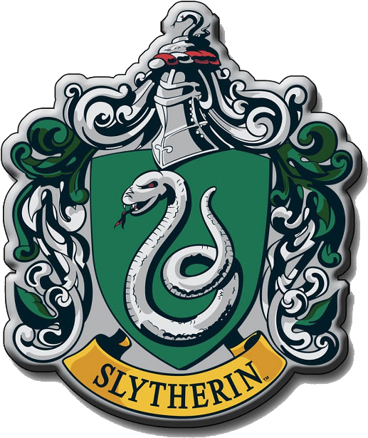
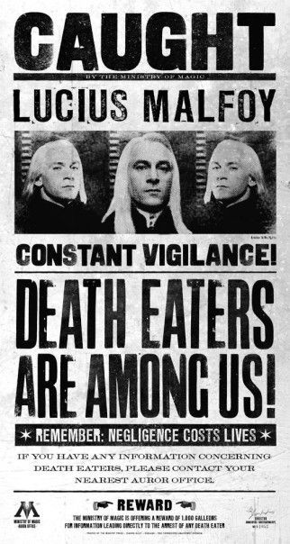

My Story
"My Father Will Hear About This!"
Well, that's me in a nutshell. You may think I am evil, I was born evil but that's not the case. You see, you are in no position to judge Draco Lucius Malfoy, you filthy muggle. What side is choose is the Right side and will always be. And by the way, "No One Asked Your Opinion, You Filthy Little Mudblood!"

Slytherin
"Or perhaps in Slytherin,
You'll make your real friends,
Those cunning folk use any means,
To achieve their ends."
— Sorting Hat

Antagonist
“ I really don't think they should let the other sort in, do you? They're just not the same, they've never been brought up to know our ways. Some of them have never even heard of Hogwarts until they get the letter, I imagine. I think they should keep it in the old wizarding families." — Draco Malfoy.

Hogwarts
The day begins at Hogwarts with breakfast in the Great Hall. Students sit at their own House table and can eat and socialise, or finish homework. The Headmaster or Headmistress eats with the professors at the High Table placed at the far end of the hall. During breakfast, owls bring in the students' post, generally consisting of The Daily Prophet, letters from parents or friends, or packages from home. A bell signals the start of the first class of the morning at 9 am.